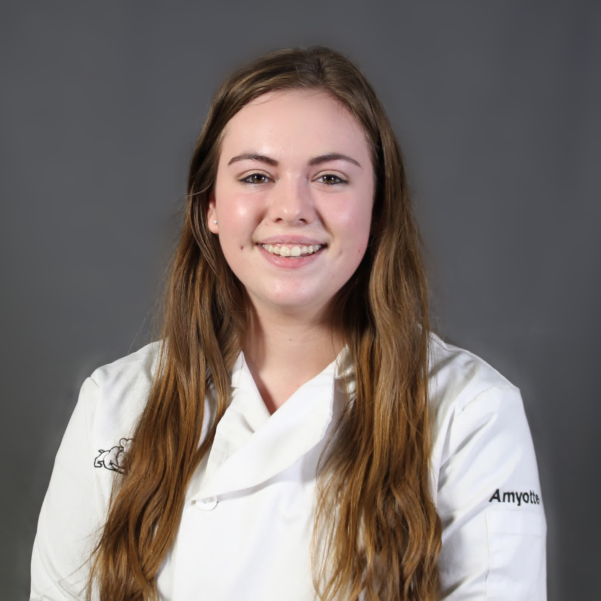

Staff
Accounting
-
Lauren McMullen
My role in the Bellerose Business Venture lies in working with one of my peers to take care of the accounting aspect of what we do. As a second year student, I have chosen to focus my learning on developing my skills in pastry making and providing wholesome, real food to our clients. I truly believe that this program is a great opportunity to introduce to the world of business in a unique setting.
-
Rebecca Sundby
Equipment and Facilities
-

Mariah Amyotte
This is my second year in the Food and Business program. My favorite part of this class is how all the students bind together into a small family. I am interested in rugby and spending time with friends and family.
-
Cole Kanuga
I am a grade 11 student, I enjoy cooking and love to eat food. I am in this class to improve my cooking skills. I believe is an essential skill for everyday; this class allows me to improve my cooking, capabilities.
General Managers
-
Alyssa Kowalyshyn
I am a positive person with a passion for cooking and dance. I enjoy serving food and working with customers face-to-face. Although I love to be in the kitchen, front of house is where my passion lies. In my last year of BBV I am the general manager and am focused on bringing our customers the best of what we have to offer!
-
Rachel Hierlmeier
Human Resources
-
Mr. Dabbagh
Marketing
-
Connor Leighton
I'm a grade 11 student passionate about food. I joined this class to improve my culinary skills. Both making and eating desserts are my favorite things to do in the kitchen!
-
Mercedes Kuszmaniuk
Production Managers
-
Kendra Feener
-

Jacob Nystrom
Public Relations
-
Nick Sutton
-

Zachary Carreau
Sales
-
Jacob Pasqual
-
Josie Pusch
I am a hard working, get it done, kind of girl. I love to cook because it gives me some hope that I can make others happy and create my own kind of food; also, it puts a smile on my face. I'm excited to give people healthy, whole food that they could enjoy with their families.
Secretaries
-
Ciara Peterson
-
Rebecca Mack